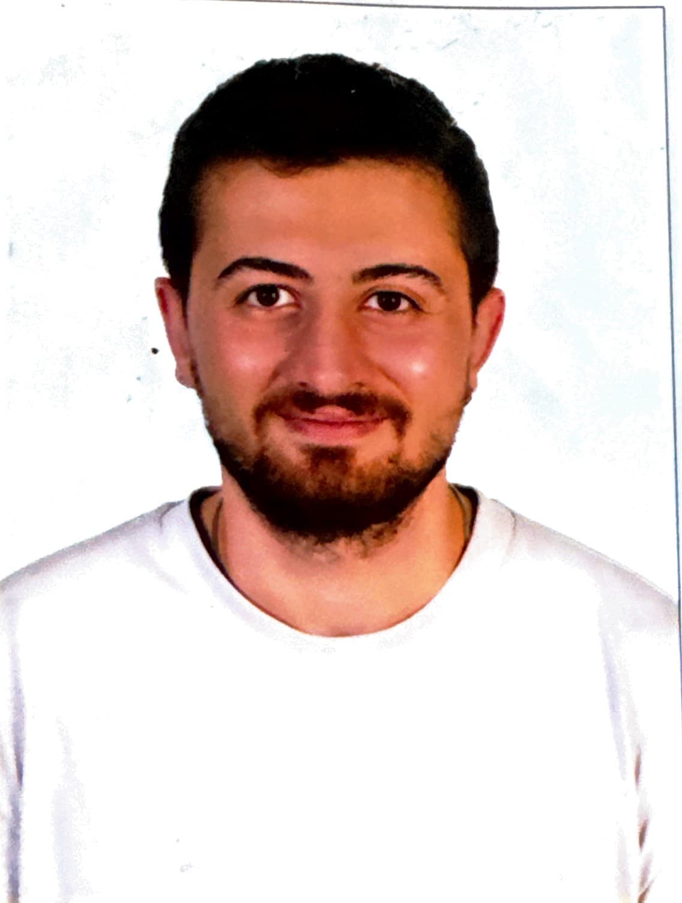

Göktuğ Arda Gök
Mechatronics EngineerSoftware and Mechatronics Engineer at ADMEX Group (Swedish branch). B.Sc. Mechatronics Engineering, Sabancı University.

About
I work on industrial motion systems at ADMEX Group, a company that builds robotic positioners, tracks and gantries, together with our team in Sweden. Before that I studied Mechatronics Engineering at Sabancı University. This page collects my work experience, my registered designs and selected projects from my studies and internships.
Projects
—
Disciplines
—
Registered Designs
—
Patent (PCT)
1
ECTS
240
§ 01
Experience
-
Jan 2026 to present
Software and Mechatronics Engineer, ADMEX Group (Swedish branch)
Istanbul, Turkey, working with the team in Sweden
- Gantry drive and control systems: servo motor and cycloidal gearbox selection, encoder specifications, control panel architecture and explosion-proof motor variants with SEW-Eurodrive.
- Part and assembly modelling in Siemens NX for positioner and gantry components.
- A parametric product configurator where customers enter dimensions, preview the product in 3D and download CAD models.
- ADMEX Web, a pricing and configuration platform for the sales team, built with AI-assisted development (Claude Code).
-
Jun to Aug 2025
Engineering Intern, Altınay Defence
Swarm drone simulation in MATLAB and ROS 2. See the project
-
Jul to Aug 2024
Intern, FANUC Turkey
Industrial robot programming, CNC maintenance and Roboguide simulation.
-
Jul 2023
Intern, ADMEX Advanced Motion Experts
-
2021 to 2026
B.Sc. Mechatronics Engineering, Sabancı University
Taught in English, 240 ECTS. Graduation project on a parallel spherical manipulator with vision-based orientation tracking.
§ 02
Featured work
§ 03
All projects by discipline
Projects are grouped by the methods and tools they share. Click a discipline to see its projects.
§ 02